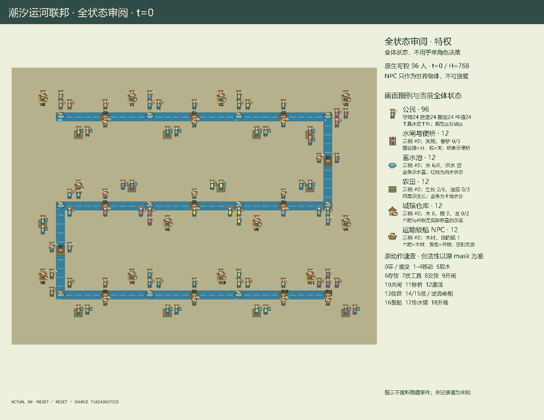

GI226 · Tidal Canal Federation

Original recording scope: 全状态审阅静态预览；打开后播放真实保存端点 · Mode: 保存状态回放
Additional generated state replay (different trajectory / full-state debug)

Develop canal districts through farming, crossings, levees and physical cargo; balance district interests with downstream water and shared flood/navigation effects.
Identity and original contract
96 independently actionable roles; 19 discrete commands per role; 184 native observation columns per role; original horizon 768 steps. Declared per-step reward range: -1.0 to 4.0. Observation regime: partially_observable.
Source SHA-256: 710243d27cc5a344f2720b331feceda722808668d2b2e17c3d542352d711b2e3
The objective, rewards, population, map and horizon remain original. A preview is not a success claim.
Objective and gameplay
Develop canal districts through farming, crossings, levees and physical cargo; balance district interests with downstream water and shared flood/navigation effects.
Sluice releases travel through a three-slot downstream queue. Irrigation competes for navigation water. Exchangeable equipment, physical cargo, finite commissions, bridge/berth congestion and delayed downstream effects connect crews.
- Any of the 96 citizens can be human- or policy-controlled through one native action row. Equipment and position determine available work.
- Walk on land or usable footbridges. Barges follow the actual serpentine canal.
- An open sluice releases at most one water unit each turn; a released unit arrives downstream three subsequent steps later.
- Irrigation consumes navigation water. Towing needs two water units in both reaches and an open sluice when crossing between reaches.
- Wrenches operate gates and infrastructure; watering cans irrigate; tow ropes move barges. Waiting neighbors accept equipment exchanges.
- Contextual work targets the nearest object within distance one; ties use object id. Conflicts resolve in clock-rotating actor order.
- Harvest into empty hands, deposit at town stores, or load physical barges. Commissions and storage are finite.
- At most one tow moves a barge per turn. Canal cells hold one barge; reservoir docks hold two.
- Local roles see radius-five entities with the declared slot limits. Keepers additionally know their home incoming-water total; posted readings can be stale.
- Bridge repairs and levees consume timber. Floods damage crossings and crops and impose district and shared costs.
- The 768-turn charter truncates without a success threshold. This scene is authored metadata, not proof of an executed replay.
Ending: No early success/failure condition. The finite 768-turn charter ends by truncation. Already-terminal raw calls preserve state/clock and return zero rewards.
What this game explores
Information, sensing & communication: Who knows a fact, when it was measured, and whether it was communicated are separate state variables. Test memory or communication using only the same role-visible evidence.
Resource commons & externalities: An action changes a persistent resource or burden that another role also encounters. Compare extraction with maintenance and record the downstream resource trajectory.
Commitment, exchange & governance: Promises consume time, liquidity, access or material. Separate an announced agreement from a binding commitment and from its eventual delivery; log cancellation and expiry too.
Complementary production & service: A useful outcome requires ordered stages, scarce equipment or another role's capability. Measure real completed products and resource circulation rather than counting intermediate actions as success.
Joint transport & shared access: Positions, load geometry, occupancy and persistent access constrain whose action can succeed next. Distinguish physical handoff, shared controls and simultaneous force from a cosmetic cooperation label.
These are questions supported by rule structure, not observed learning effects.
Play it: operating walkthrough
crucibles play --game gi226Keep Python running and open its printed address. Select this game, set a seed and press Create session. The game itself is always English.
Assign a role range to Host with Assign / take over, or Assign all roles. Invite a second participant with Create player invitation, then assign a disjoint subset. Every original role is available.
For every owned role choose a legal command and press Queue. Arrow keys / WASD queue a declared directional action for the current role camera when available. Space or Advance one joint step advances everyone together. Non-directional games use the selectors.
Unqueued roles use the labelled untrained uniform-legal policy. Take over or release roles before the next step without resetting. Full-state debug is privileged and permanently logged; role cameras preserve permissions. Close the session to retain logs. Server restart does not restore sessions.
Complete command reference
IDs and English labels exactly match the manifest. Availability depends on role, resources, location and phase. An available action can still have no productive effect.
0·Wait / accept neighboring handoff
1·Move north
2·Move east
3·Move south
4·Move west
5·Withdraw one timber at nearest store
6·Deposit carried timber or grain
7·Swap tools with accepting neighbor
8·Give cargo to empty accepting neighbor
9·Open sluice with wrench
10·Close sluice with wrench
11·Repair footbridge with timber and wrench
12·Irrigate field with watering can
13·Harvest ripe field into empty hands
14·Tow barge downstream
15·Tow barge upstream
16·Load cargo onto empty barge
17·Post upstream water reading downstream
18·Raise town levee with three timber
Roles and capability identifiers
These original role names describe capabilities, not interchangeable skins. Check each owned role's legal selector before planning handoffs.
agent_000·district_00_keeper_0
agent_001·district_00_builder_0
agent_002·district_00_hauler_0
agent_003·district_00_grower_0
agent_004·district_00_keeper_1
agent_005·district_00_builder_1
agent_006·district_00_hauler_1
agent_007·district_00_grower_1
agent_008·district_01_keeper_0
agent_009·district_01_builder_0
agent_010·district_01_hauler_0
agent_011·district_01_grower_0
agent_012·district_01_keeper_1
agent_013·district_01_builder_1
agent_014·district_01_hauler_1
agent_015·district_01_grower_1
agent_016·district_02_keeper_0
agent_017·district_02_builder_0
agent_018·district_02_hauler_0
agent_019·district_02_grower_0
agent_020·district_02_keeper_1
agent_021·district_02_builder_1
agent_022·district_02_hauler_1
agent_023·district_02_grower_1
agent_024·district_03_keeper_0
agent_025·district_03_builder_0
agent_026·district_03_hauler_0
agent_027·district_03_grower_0
agent_028·district_03_keeper_1
agent_029·district_03_builder_1
agent_030·district_03_hauler_1
agent_031·district_03_grower_1
agent_032·district_04_keeper_0
agent_033·district_04_builder_0
agent_034·district_04_hauler_0
agent_035·district_04_grower_0
agent_036·district_04_keeper_1
agent_037·district_04_builder_1
agent_038·district_04_hauler_1
agent_039·district_04_grower_1
agent_040·district_05_keeper_0
agent_041·district_05_builder_0
agent_042·district_05_hauler_0
agent_043·district_05_grower_0
agent_044·district_05_keeper_1
agent_045·district_05_builder_1
agent_046·district_05_hauler_1
agent_047·district_05_grower_1
agent_048·district_06_keeper_0
agent_049·district_06_builder_0
agent_050·district_06_hauler_0
agent_051·district_06_grower_0
agent_052·district_06_keeper_1
agent_053·district_06_builder_1
agent_054·district_06_hauler_1
agent_055·district_06_grower_1
agent_056·district_07_keeper_0
agent_057·district_07_builder_0
agent_058·district_07_hauler_0
agent_059·district_07_grower_0
agent_060·district_07_keeper_1
agent_061·district_07_builder_1
agent_062·district_07_hauler_1
agent_063·district_07_grower_1
agent_064·district_08_keeper_0
agent_065·district_08_builder_0
agent_066·district_08_hauler_0
agent_067·district_08_grower_0
agent_068·district_08_keeper_1
agent_069·district_08_builder_1
agent_070·district_08_hauler_1
agent_071·district_08_grower_1
agent_072·district_09_keeper_0
agent_073·district_09_builder_0
agent_074·district_09_hauler_0
agent_075·district_09_grower_0
agent_076·district_09_keeper_1
agent_077·district_09_builder_1
agent_078·district_09_hauler_1
agent_079·district_09_grower_1
agent_080·district_10_keeper_0
agent_081·district_10_builder_0
agent_082·district_10_hauler_0
agent_083·district_10_grower_0
agent_084·district_10_keeper_1
agent_085·district_10_builder_1
agent_086·district_10_hauler_1
agent_087·district_10_grower_1
agent_088·district_11_keeper_0
agent_089·district_11_builder_0
agent_090·district_11_hauler_0
agent_091·district_11_grower_0
agent_092·district_11_keeper_1
agent_093·district_11_builder_1
agent_094·district_11_hauler_1
agent_095·district_11_grower_1
Information and observation permissions
Public static map. Dynamic groups use Manhattan radius5, nearest-distance then id order, capped at8 citizens or3 per object group. Visible attributes equal native slot contents; unseen slots are zero. Only keepers receive home incoming-water totals remotely. Town readings are local and may be stale.
The GIF is full-state debug and may reveal hidden entities or private state. Train on obs[agent], not the picture, state tree or another role's private row. Field slices and visibility are in the original manifest.
Reinforcement-learning integration
import jax
from crucibles_jaxmarl import make
env = make("gi226")
key = jax.random.PRNGKey(0)
key, rk, ak, sk = jax.random.split(key, 4)
obs, state = jax.jit(env.reset)(rk)
actions = env.sample_actions(ak, state)
obs, state, rewards, dones, info = jax.jit(env.step_env)(sk, state, actions)
done = dones["__all__"]Observations are float32 vectors of width 184; actions are scalar int32; masks have 19 entries. Supply all 96 roles each transition. Masked sampling is an engineering reference, not a trained learner.
step_env retains terminal data without reset. step performs outer autoreset and keeps terminal data in info["raw_state"] and info["raw_observation"]. Use dones["__all__"] for episode boundaries; separate completion, failure and time limit in analysis.
JIT or vmap equal identities and shapes. Split independent reset, policy and transition keys. Group different shapes explicitly; do not shrink the population or horizon. Host rendering stays outside training.
Training questions and fair evaluation
Define valid completion from the objective before fitting. Preserve original rewards and also report real deliveries/services, losses, resource state, unresolved episodes and per-role returns. Animation is not a reward signal.
Who knows a fact, when it was measured, and whether it was communicated are separate state variables. Test memory or communication using only the same role-visible evidence.
An action changes a persistent resource or burden that another role also encounters. Compare extraction with maintenance and record the downstream resource trajectory.
Promises consume time, liquidity, access or material. Separate an announced agreement from a binding commitment and from its eventual delivery; log cancellation and expiry too.
A useful outcome requires ordered stages, scarce equipment or another role's capability. Measure real completed products and resource circulation rather than counting intermediate actions as success.
Positions, load geometry, occupancy and persistent access constrain whose action can succeed next. Distinguish physical handoff, shared controls and simultaneous force from a cosmetic cooperation label.
Compare memory, communication or centralized critics under matched actor information. Declare critic access; keep actor inputs role-filtered. Match partner/opponent distributions, masks, compute and checkpoint selection. Final tests never enter fitting or selection.
Independent training runs or source-pairing blocks are inferential units; episodes from one policy are not independent training replications. Save hashes, keys, versions, device, time and cost. Negative, zero, failed and indeterminate outcomes are valid. No trained checkpoint or target score is supplied.
Classification and evidence
Overlapping editorial labels are reading aids, not proof of novelty, difficulty, strategic equivalence or learning effects.
- Information, sensing & communication
- Evidence
manifest.task.objective: Develop canal districts through farming, crossings, levees and physical cargo; balance district interests with downstream water and shared flood/navigation effects.
- Resource commons & externalities
- Evidence
manifest.task.objective: Develop canal districts through farming, crossings, levees and physical cargo; balance district interests with downstream water and shared flood/navigation effects.
- Evidence
manifest.task.interaction: Sluice releases travel through a three-slot downstream queue. Irrigation competes for navigation water. Exchangeable equipment, physical cargo, finite commissions, bridge/berth congestion and delayed downstream effects connect crews.
- Evidence
manifest.task.observation_access: Public static map. Dynamic groups use Manhattan radius5, nearest-distance then id order, capped at8 citizens or3 per object group. Visible attributes equal native slot contents; unseen slots are zero. Only keepers receive home incoming-water totals remotely. Town readings are local and may be stale.
- Commitment, exchange & governance
- Evidence
scene.rules.10: The 768-turn charter truncates without a success threshold. This scene is authored metadata, not proof of an executed replay.
- Complementary production & service
- Evidence
manifest.task.observation_access: Public static map. Dynamic groups use Manhattan radius5, nearest-distance then id order, capped at8 citizens or3 per object group. Visible attributes equal native slot contents; unseen slots are zero. Only keepers receive home incoming-water totals remotely. Town readings are local and may be stale.
- Evidence
manifest.actions.11: Repair footbridge with timber and wrench
- Evidence
scene.rules.5: Contextual work targets the nearest object within distance one; ties use object id. Conflicts resolve in clock-rotating actor order.
- Joint transport & shared access
- Evidence
manifest.task.objective: Develop canal districts through farming, crossings, levees and physical cargo; balance district interests with downstream water and shared flood/navigation effects.
- Evidence
manifest.task.interaction: Sluice releases travel through a three-slot downstream queue. Irrigation competes for navigation water. Exchangeable equipment, physical cargo, finite commissions, bridge/berth congestion and delayed downstream effects connect crews.
- Evidence
manifest.actions.6: Deposit carried timber or grain
Source, receipts and preview limits
The additional generated state GIF replays saved untrained legal actions through the original kernel. At most 25 actual endpoints include initial and terminal state; no invented interpolation. It is full-state debug, not the role observation. Where an original scene preview exists, it is displayed first with its own recorded information scope. The two recordings may use different trajectories and views.
Original source, observation slices, manifest and mechanism
Native receipt · Presentation receipt
Engineering passes do not establish learning. Nonzero floating differences remain recorded and undetermined; no new tolerance was introduced. Human scores remain unverified.
Complete original saved replays
Download original endpoints and standalone players
All eleven GI226/227 tracks and six GI229 tracks retain failures, zero effects and numerical uncertainty. Older instructional panels are archival content.